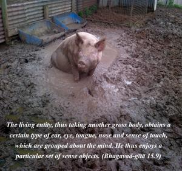
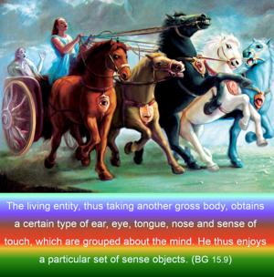
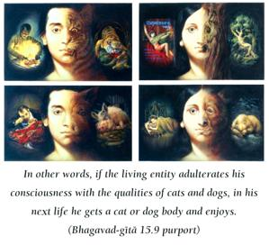
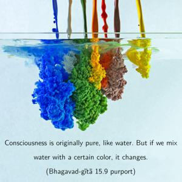
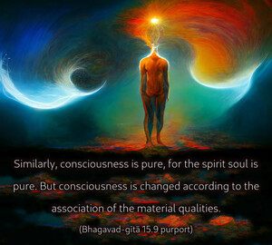

The living entity, thus taking another gross body, obtains a certain type of ear, eye, tongue, nose and sense of touch, which are grouped about the mind. He thus enjoys a particular set of sense objects.





In other words, if the living entity adulterates his consciousness with the qualities of cats and dogs, in his next life he gets a cat or dog body and enjoys. Consciousness is originally pure, like water. But if we mix water with a certain color, it changes. Similarly, consciousness is pure, for the spirit soul is pure. But consciousness is changed according to the association of the material qualities. Real consciousness is Kṛṣṇa consciousness. When, therefore, one is situated in Kṛṣṇa consciousness, he is in his pure life. But if his consciousness is adulterated by some type of material mentality, in the next life he gets a corresponding body. He does not necessarily get a human body again; he can get the body of a cat, dog, hog, demigod or one of many other forms, for there are 8,400,000 species.